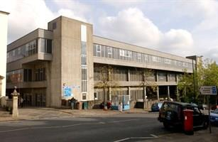

local_hospital Bristol NHS Foundation Trust
Verified visitor guide for Bristol NHS Audiology clinics across UHBW (St Michael's, Weston General) and North Bristol NHS Trust (Southmead Hospital).
The Bristol NHS network delivers combined Audiology and ENT care across University Hospitals Bristol and Weston NHS Foundation Trust (UHBW) and North Bristol NHS Trust (NBT), offering comprehensive hearing assessments, digital hearing aid fittings, tinnitus management, and balance clinics.

St Michael's Hospital
Main Adult Audiology Centre for Central Bristol (St Michael's Hill, BS2 8EG)

Southmead Hospital
Brunel Building Audiology Clinic (Gate 36, Level 1, BS10 5NB)
Main Audiology Centres & Satellites:
- St Michael's Hospital: UHBW main adult audiology centre (Level C).
- Brunel Building at Southmead Hospital: NBT Gate 36 (Level 1).
- Weston General Hospital: UHBW Ground Floor Main Outpatients.
- 7 Community Satellite Clinics: Cossham, SBCH, Clevedon, Thornbury, Portishead, Stockwood, and Domiciliary care.
St Michael's Hospital and the central precinct sit inside the Bristol Clean Air Zone. Non-compliant vehicles are subject to a daily charge when driving to St Michael's Hill. Check your vehicle compliance on the official Bristol City Council CAZ tool before travelling. (Note: Southmead Hospital and Weston General Hospital are outside the central CAZ zone).
All main Audiology waiting rooms at St Michael's Hospital, Southmead Brunel Building (Gate 36), and Weston General Hospital feature induction hearing loops, clear digital signage, and accessible seating. If you require a BSL interpreter or speech-to-text reporter for your appointment, contact the department in advance.
Essential Clinic Telephone Numbers:
Under Bristol NHS protocols, your hearing prescription should be formally reviewed every 3 years, or sooner if you experience noticeable changes:
When to Contact Audiology Directly:
- 3 Years Since Last Test: You can contact the hospital audiology department directly for a retest without needing a new GP referral.
- Sudden Hearing Drop (Red Flag): Sudden loss occurring within 72 hours requires immediate same-day ENT evaluation to preserve hearing.
- Device Malfunction: Physical repair, buzzing, or mould refitting appointments can be booked directly.
emergency Urgent Bristol Hospital Intake:
For sudden hearing drops, attend St Michael's Hospital ENT Clinic (Southwell St, BS2 8EG), Bristol Royal Infirmary (BRI) A&E (BS2 8HW), or Southmead Hospital A&E (BS10 5NB).
NHS hearing aid batteries and replacement tubing are provided completely free of charge to registered patients:
Order Free NHS Batteries, Tubes & Domes Online
Patients registered with the Adult Audiology service at University Hospitals Bristol and Weston NHS Trust (UHBW) can request replacement consumables directly through the official UHBW online form.
- Batteries: P13 (Orange), 312 (Brown), 675 (Blue)
- Earmould replacement tubing
- Thin/slim tubes & silicone domes
- Cleaning wires
- Posted via Royal Mail 2nd Class within 2 weeks.
- Hearing aid batteries are an expensive NHS resource; please only request when running low.
- Requires name, DOB, address & NHS/T number.
📮 Traditional Postal Battery Service
You can also send your yellow NHS Battery Record Book along with a stamped addressed envelope to your clinic to receive fresh battery packs by post.
🔧 Drop-in Volunteer Clinics
Local volunteer drop-ins across Bristol offer free tubing changes and cleaning support without waiting for hospital appointments.
Address: St Michael's Hill, Bristol, BS2 8EG (Southwell Street entrance)
Colored Zone & Floor: Level C - Blue / Yellow Clinical Zone
🚶 Estimated Walking Distances:
- From St Michael's Hill Main Entrance (Level E): Enter main reception on Level E. Head towards the central lift bank/stairwell and descend 2 floors down to Level C.
- From Southwell Street Courtyard Entrance (Level C): Enter via the dedicated Level C courtyard entrance (set back from St Michael's Hill near the NIHR Research Facility). This entrance provides step-free, flat access straight into Level C.
- Follow Zone Signs: Follow the blue line floor indicator and overhead "Audiology Outpatients / Hearing Aids" signs along the Level C main clinical corridor.
- Reception & Waiting Room: Audiology reception desk and waiting room are on your left along the main Level C corridor.
☕ Food & Refreshment Options at St Michael's:
local_cafe Brewnel's Café (Level C Foyer)
Situated directly inside the Level C entrance foyer near Audiology. Serves coffee, tea, sandwiches, hot paninis, pastries, and cold drinks.
Hours: Mon–Fri 7:00 am – 6:00 pm | Sat–Sun 9:00 am – 4:00 pm
fastfood 24/7 Vending Machines (Level C)
Located in the Level C foyer next to Brewnel's Café. Provides 24-hour access to hot beverages, cold drinks, sandwiches, and snacks.
storefront Nearby Independent Coffee Shops (St Michael's Hill)
Independent cafes located just 1–2 minutes walk outside the hospital on St Michael's Hill, including Mocha Mocha and Bad Squirrel Café.
St Michael's Hospital Parking Tariffs:
Standard tariffs apply 7:00 am – 5:00 pm, Monday to Sunday:
| Duration | Tariff |
|---|---|
| 0 to 1 hour | £3.20 |
| 1 to 2 hours | £4.20 |
| 2 to 4 hours | £7.30 |
| 4 to 6 hours | £9.40 |
| 6 to 8 hours | £19.00 |
| 8 to 24 hours | £26.50 |
| Overnight (5:00 pm – 7:00 am) | £3.50 |
♿ Blue Badge Holders: Free parking for up to 4 hours in designated disabled bays. Always display your valid badge and scan it at the payment machine upon arrival.
RingGo Cashless Mobile Parking & Street Parking:
On-street Pay & Display parking on St Michael's Hill and the nearby Montague Hill car park use RingGo.
- RingGo Telephone Pay / Registration: Call 0117 341 9000
- Location Code: Check physical street signs adjacent to your parking spot for the 4- or 5-digit RingGo zone code.
Address: Gate 36, Level 1, Brunel Building, Southmead Hospital, Southmead Road, Bristol, BS10 5NB
Colored Zone & Floor: Level 1 - Lime / Green Zone (Gate 36)
🚶 Estimated Walking Distances:
- Enter Main Atrium: Enter through the main entrance of the Brunel Building into the Level 1 central indoor street (Atrium).
- Walk Along Central Street: Walk straight ahead along the central glass-roof atrium. Gates are numbered sequentially on overhead banners.
- Locate Gate 36 Landmark: Continue past Costa Coffee and M&S. Look for Gate 36 on your right, situated directly opposite the League of Friends Coffee Shop.
- Check-in at Reception: Walk through Gate 36 doors to the Audiology reception desk and patient waiting area.
☕ Food & Refreshments in Brunel Building (Level 1 Atrium):
local_cafe League of Friends Coffee Shop
Located on Level 1 directly opposite Gate 36 Audiology. Serves fresh coffee, tea, sandwiches, and homemade cakes. Proceeds support hospital equipment.
shopping_bag M&S Simply Food
Located in the main Level 1 Brunel Atrium for sandwiches, salads, hot bakery, fruit, and cold drinks.
coffee Costa Coffee
Features a sit-down cafe and quick express kiosk in the Level 1 Brunel Atrium for coffee and baked goods.
restaurant Fresh Restaurant / Canteen
Main hospital canteen on Level 1 serving hot breakfasts, daily lunch specials, jacket potatoes, and salad bar.
Brunel Multi-Storey Car Park Tariffs (ANPR System):
| Duration | Tariff |
|---|---|
| 0 to 20 minutes (Drop-off / Pick-up) | FREE |
| 20 minutes to 2 hours | £4.40 |
| 2 to 4 hours | £6.60 |
| 4 to 6 hours | £8.60 |
| 6 to 8 hours | £9.70 |
| 8 to 24 hours | £13.20 |
| 7-Day Weekly Pass | £35.20 |
Payment Kiosks: Pay at the automated kiosks inside the Brunel atrium before returning to your car (accepts cards, contactless, and cash).
Southmead Parking Office Phone: 0117 414 3334 (Atrium desk open 6:00 am – 8:30 pm).
Address: Grange Road, Uphill, Weston-super-Mare, BS23 4TQ
Colored Zone & Floor: Ground Floor - Main Outpatients Corridor

Main Entrance Outside
Grange Road entrance & visitor drop-off zone (Uphill, Weston-super-Mare)

Main Reception & Visitor Foyer
Ground floor entrance area next to Costa Coffee seating
Main Outpatients Corridor to Audiology
Follow outpatients directional signs straight down the main ground floor wing

Audiology Reception & Waiting Area
Ground floor clinic reception desk and comfortable patient waiting area
- Enter Main Entrance: Enter through the main hospital building entrance off Grange Road onto the ground floor corridor.
- Pass Costa Coffee: Walk past the Costa Coffee seating area on your right towards the main Outpatients reception.
- Follow Outpatients Signs: Continue straight down the main Outpatients corridor. Overhead directional signs point clearly to "Audiology & Hearing Aids" at the end of the clinical wing.
- Check-in at Reception: Audiology reception desk and waiting room are situated on the ground floor at the end of the Outpatients corridor.
🚌 Free Station Shuttle Bus & Parking:
A free circular shuttle bus operates Monday to Friday linking Weston General Hospital directly with Weston-super-Mare railway station.
📞 Direct Clinic Line: 01934 647 047
To reduce travel for patients across Bristol, South Gloucestershire, and North Somerset, NHS Audiology conducts outpatient hearing tests, hearing aid fittings, and device maintenance at community satellite clinics:
Cossham Hospital (Kingswood)
South Bristol Community Hospital (SBCH)
Clevedon Hospital
Thornbury Health Centre / Hospital
Portishead Medical Centre
Stockwood Medical Centre
NHS Domiciliary (Home Visit) Service
How to Get an NHS Referral:
Your local GP will inspect your ear canals for wax blockages, review symptoms, and submit a direct electronic referral to UHBW (St Michael's / Weston General) or North Bristol NHS Trust (Southmead Hospital).